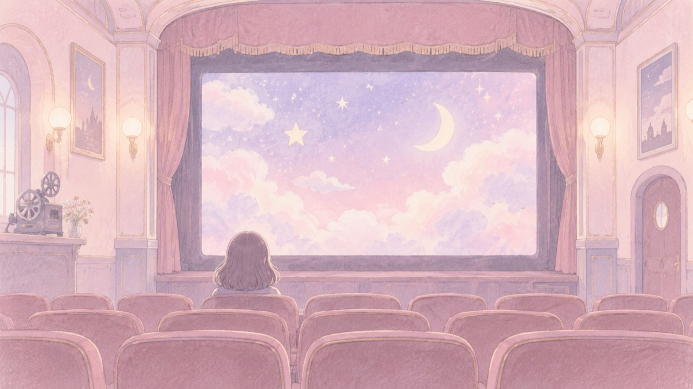
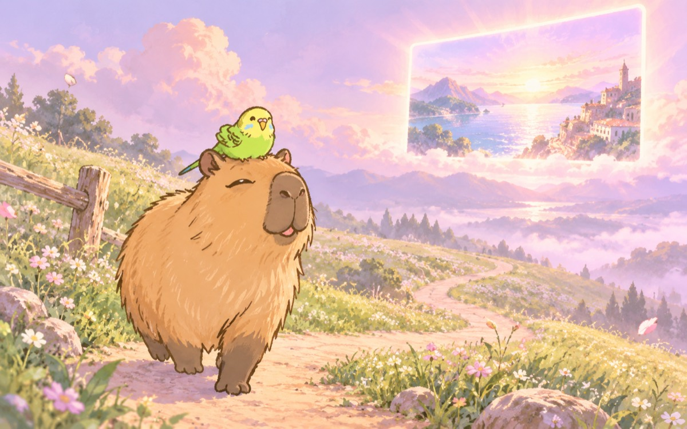
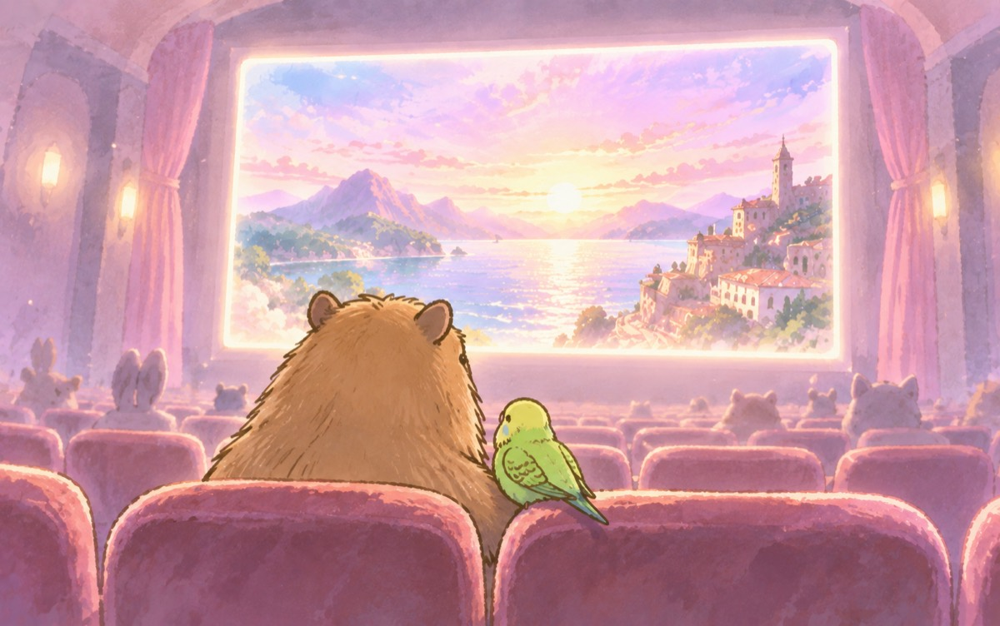
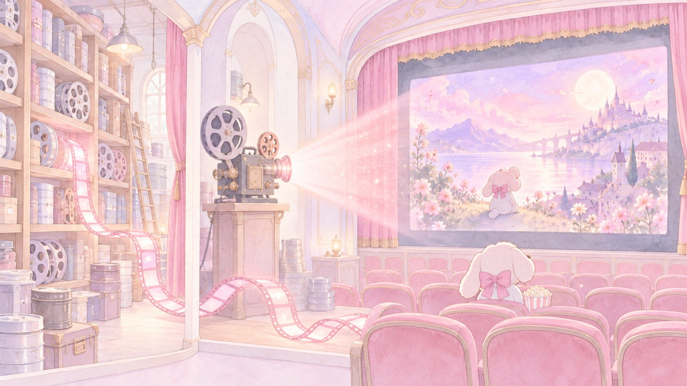
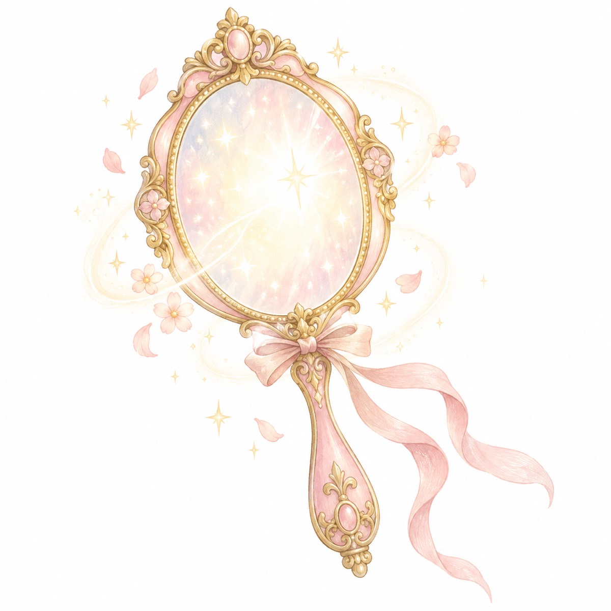
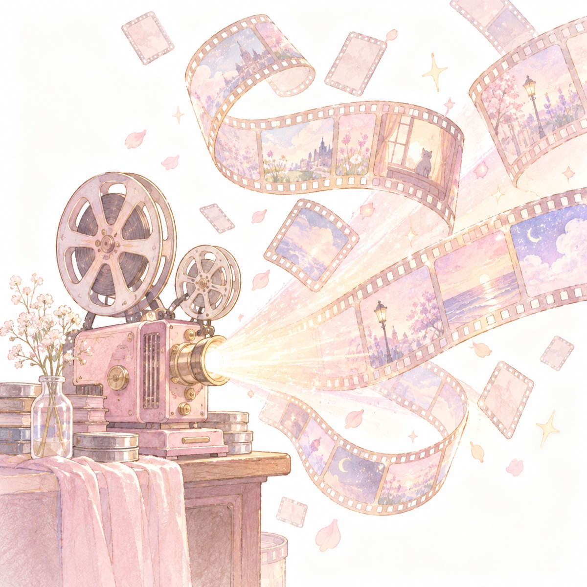

用語が多くて難しく見えるけれど、比喩を1つに揃えると、驚くほどきれいに、たった1枚の絵に収まります。今日はこの1枚を持って、3人で「これってこういうこと？」を始めるための地図です。
ゴールはできるだけ鮮明に、
道中はできるだけ緩やかに。
— おけもんが78日走って掴んだ、核

遠くの窓だけが、くっきり輝いている。足元の道は、くねって、先は霞んだまま
これは感想ではなく、原書がずっと言っていることの要約です。なぜそう言えるのかを、3つに分けます。
原書では、現実を構築するとは最終ゴールを決めることだと繰り返し書かれています。映写機がゴールのコマを照らすと、展開は自動的にそちらへ向かう。だから影響を与える先は、出来事の流れでも他人でもなく、最終結果。
ここだけは思いきり鮮明でいい。ゴールのシーンは、ありありと、臨場感を持って描く。それは執着ではなく作業です。
一方で原書は、台本は決してコントロールできないと言い切ります。変えようとしたり逆らおうとしたりすると罠にはまる、と。やることは3つだけ——台本をコントロールしようとするのをやめる／台本の流れに乗る／ゴールのコマを構築する。
つまり「道中を緩やかに」は、諦めや妥協ではなく、担当が違うという話。誰を通じて、どの順で、いつ来るかは、向こうの領分です。
ここがおけもんの言うとおりで、原書の理屈とも合います。ゴールを描いたのに「まだ実現していない」のほうを見つめ続けると、そこに重要性が載る。それが過剰ポテンシャル——内側に生まれる緊張です。
そして原書はこう畳みます。意図は、実現されるか手放されるかのどちらかでなければならない。宙吊りの願いは、エネルギーを奪うだけの余分な荷物になる。「欲しい」と握り続ける状態そのものが、ブレーキだということです。

スクリーンは、はっきり見ていい。握らないのは、そこへ至る道順のほう
上の一行が成り立つ理由が、この絵に全部描いてあります。ここから先の用語も、全部この絵のどこかを指しているので、迷子になったら戻ってくる場所。

現実＝上映中の映画。あなたは登場人物として中にいて、台本どおりに動いている。
でも席を1つ移して観客席にも同時に座れる。それが「目を覚ます」。
そこから結末のコマだけを選ぶと、途中の段取りは勝手についてくる。
難しくなるのは、ここに「振り子」「過剰ポテンシャル」「三つ編み」「マネキン」と別名が増えるから。中身はどれも、この絵の一部です。
本の章順ではなく「実際に使う順」で並べました。カードを開くと、日常のたとえが出てきます。
ほとんどの時間、わたしたちは映画に没入していて、自分が見られていること自体を忘れています。ここでやるのは、ストーリーから抜けることではなく、見ている自分を思い出すことだけ。
コツは二重にすること。現実だけ見るのでも、自分だけ見るのでもなく、両方を同時に。
①で目が覚めたら、次は立ち位置を変える。体はスクリーンの中にあるままでいい。意識だけ、客席へ置きます。
タフティ特有の「三つ編み」は、この切り替えを身体の感覚で起こすためのスイッチ。後頭部から背中へ伸びる想像上の三つ編みに注意を置いて、同時に頭の中のスクリーンにゴールの絵を出す——注意を「感じる場所」と「描く場所」の2つに分けるのが、この本の一番の発明です。
何かが起きたとき、間に「これの利点は？」という一拍を入れる。答えが出たら受け取る。出なくても、そのまま受け入れる。それだけ。
ポイントは事前に設定しておくこと。起きてから慌てて探すのではなく、出かける前に「どっちに転んでもいい」と決めておくと、そもそも動揺が小さくなります。
この本でいちばん実務的なところ。やることは最終シーンを決めて、そこに光を当て続けるだけ。誰を通じて、どの順番で、いつまでに——は全部あちら側の担当です。
うまくいかない時はたいてい、結末ではなく途中経過を握っている。「あの人がこう言ってくれたら」「この方法でなければ」と決めた瞬間に、映画の中から映画を書き換えようとしていることになります。
世界は鏡なので、求めている姿を映せば「求めている」が返り、与えている姿を映せば「与えられる」が返る。だから最初の一歩は必ずこちらから。愛されたいなら、先に放つ。
そしてマネキンの着替え——もうそうなっている自分として、今日ちょっとだけ振る舞ってみる。演技ではなく予告編の先取り。「なりたい」と願い続ける状態は、裏を返せば「まだ無い」を照らし続けることなので、逆効果になります。
『トランサーフィン』側の言葉。全部さっきの映画館のどこかにあります。
たくさんの人が同じ方向に気持ちを向けると生まれる流れ。会社、業界、流行、「普通はこうでしょ」という空気。誰かの悪意ではなく、人が集まると勝手にできます。
たとえるなら上りのエスカレーター。自分の足で歩いているつもりでいられるけれど、実際に運んでいるのは階段の側。／ごはんは感情で、賛成でも反対でも同じだけ栄養になります。アンチと信者は、同じ皿からエサをあげている。
ひとつのことに重要性を載せすぎたときに、自分の内側に生まれる緊張。振り子とは別物です（混ぜると話がこんがらがります）。
「これがないと困る」「この道でなきゃダメ」と思ったときの、お腹や肩の張りがそれ。大切にすることと、重要性を上げることは別。
どうでもよくなることではありません。大切にしたまま、握力だけ緩める。
推しは推しのまま、「会えなかったらこの世の終わり」だけ外す。それだけで動きが軽くなります。
理屈で考える理性と、理由なく反応する魂。「魂に従え」ではなく、二人を仲直りさせるのがトランサーフィンの言い方。
大事なのは「怖い」と「魂のNO」を混ぜないこと。怖いだけなら進んでよく、魂が嫌がっているなら別ルートを探す。見分けるには、実際にやってみて反応を見るのが早いです。

「世界という鏡」——先に出したものが、返ってくる
起こりうる展開が、もう全部そこに在るという前提。だから作るのではなく、選ぶ。
量子力学の言葉づかいが出てきますが、信じ込む必要はありません。「そういうルールのゲームだとして、やってみたらどうなるか」で十分です。
「自分が頑張って動かす」が内的意図。「世界のほうから来るのを許す」が外的意図。強制せず、起きるにまかせる。
頼む・要求する・追いかける、を全部やめて、ただ決めて、あとは流れに乗る。ここが一番わけがわからないところなので、今日は「わからん」で置いておくのが正解かも。
原書の目次そのままの並び（OCR全文から取りました）。章名を押すと、中身の一言解説が開きます。
注意の向け先は2つある——目の前の現実（外のスクリーン）と、頭の中の想像（内のスクリーン）。ふだんは外に釘づけになっている、という出発点。
夢の中で「これは夢だ」と気づくと動けるようになる。同じことを起きている間にやる、という宣言。
現実は「起きているときの夢」。自分で動いているつもりで、実は台本に沿って動かされている。
何を考えるかより先に、いま自分の注意がどこを向いているかを見る。全部の技法の土台。
待つのでも期待するのでもなく「構築する」。最終ゴールを決める、という意味。
後頭部から背中へ伸びる想像上の三つ編み。ここに注意を置くのが、この本独自のスイッチ。
三つ編みを感じながら、同時に内のスクリーンにゴールの絵を出す。注意を2つに分けるのが要点。
自分の判断で動いていると思っているが、多くは台本どおり。まずこれを認めるところから。
「なぜ思いどおりにならないのか」と問い続けること自体が罠。問いの向きを変える。
習慣を入れ替える。欲しがる→与える、拒否する→受け入れる、眠る→目を覚ます。
自分を作り変えるのではなく、別のコマにいる自分へ移る、という発想の転換。
自分の内側から使える力の話。理性の努力とは別系統のもの。
もう持っている人として振る舞う。願い続けると「まだ無い」を照らし続けることになるため。
その場にちゃんと居る状態。目を覚ましたうえで、自分の立ち位置を保つこと。
何が起きても「これの利点は？」と一拍おく。事前に決めておくのがコツ。
強制して起こすのではなく、現実のほうから来るのを許す。押さないための章。
出来事の流れは自分の持ち物ではない。逆らうと罠にはまる、という核心の章。
自分の内側から出てくるものを、そのまま出していい、という許可。
理屈ではなく、流れから来る合図を感じ取る。
コントロールする習慣を、手放して流れに乗る習慣へ置き換える。
自分の力だけで押し切ろうとしない。台本の力と知恵のほうを使う。
中身のない型として生きている状態。役から抜けるための対比として置かれている。
鏡に映したいものを、頭の中で先に作る。文句を言うのではなく愛せ、という原則。
世界に何かを望む前に「鏡に対して自分は何をすべきか」と問い直す。
人を操るのは恥ずべき行為だと明言される章。ブーメランで返るため。
まだ持っていないものを持っているかのように振る舞うと、反射が映像に変わる。
欠乏意識から抜ける／目的を見つける／達成する。人生の3つの課題。
自分を好きになれないのは、他人の基準と比べているから。
欠点も含めて唯一無二として受け入れると人生はうまくいく、という断言。
構築する／フリをする／実際に動く。3つを同時にやる。
どの方向に伸びるかは自分が一番知っている。分からなければ「成長する」を目標に置く。
具体的なやり方編。良いと思う人の状態を映写機として借りる。
思考は何かを生み出すのではなく、保管庫から読み取っているだけ、という捉え方。
繰り返す言葉が現実の色を決める。使う言葉を選ぶ。
流れが出すサインに気づいて、その場で拾う練習。
自分と世界が噛み合っている状態。力まずに事が運ぶときの感覚。
身体を通るエネルギーと三つ編みの関係。実践の身体編。
タフティという語り手の設定に関わる章。神話的な部分。
仕組みは理解しきれなくていい。使えれば足りる、という締め。
タフティからの別れの言葉。
1日1テーマ×78日のワークブック。原題と「やること」を全部並べました。週の見出しを押すと開きます。おけもんが実際に走っているのがこれで、いまDay24のあたり。
| Day | 原題 | やること |
|---|---|---|
| 1 | 目覚め | 目の前のことを「これ夢だな」と思いながら一日過ごす |
| 2 | 夢の乗っとり | 今どこで何をしてるか自分に言い聞かせて、また舞台に戻る |
| 3 | 神の子 | 「〜になりますように」を全部「〜にする」に言い換える |
| 4 | スター誕生 | 「みんなやってるから」を1個やめて、自分の基準を1個決める |
| 5 | 世界という鏡 | 自分が世界をどう思ってるか書き出す（それが返ってくる） |
| 6 | ブーメラン | イラッとしたとき、投げ返す前に止める |
| 7 | 鏡に映っているのは幻影 | 現実を見て反応するのをやめ、先に自分を決める |
| Day | 原題 | やること |
|---|---|---|
| 8 | ピンクの双子 | 「あ、いま良かった」の一瞬を捕まえて、そこに焦点を合わせる |
| 9 | 安堵のため息 | 進んでない計画を、捨てるか一歩進めるか決める |
| 10 | 解放 | 欲しいものを「当然自分のもの」として扱って一歩出る |
| 11 | 自信 | 自信を出そうとせず、守るものを外して流れに乗る |
| 12 | バランス | 克服しようとせず、重要性のほうを下げる |
| 13 | 魂の魅力 | 浮かぶネガティブな場面を、いいやつに置き換える |
| 14 | 自分への愛 | 他人のよさを見る前に、自分のいいところを1個認める |
| Day | 原題 | やること |
|---|---|---|
| 15 | 私の目的は、私 | 自分のケアを1個やる。何でもいい |
| 16 | 信念 | 信じるかどうかは置いといて、とりあえずやってみる |
| 17 | 罪悪感 | 「申し訳ない」を1個手放す。罪がなければ罰もない |
| 18 | 自己価値 | アピールしたくなったら黙る。人のプライドは傷つけない |
| 19 | 決定者の信条 | 考えと行動がズレてるところを1個直す |
| 20 | あなたの本当の道 | 「うまくいってるのにモヤる」を探す。魂の反対サイン |
| 21 | 判決を下す | 「こうすべき」を1個、自分の基準で決め直す |
| Day | 原題 | やること |
|---|---|---|
| 22 | 意図の宣言 | なんとなくやってることをやめて、意図を口に出す |
| 23 | 行動の決意 | 欲しいものを今日取りに行く。バス停まで歩く感じで |
| 24 | 所有の決意いまここ | 「手に入ったらどんな気分か」だけ考える。希望も不安も捨てる |
| 25 | 世界の大掃除 | 家か職場を掃除していらないものを捨てる。恐怖・不満・恨みも |
| 26 | 成功の波 | 良かった感覚を思い出して、小さい吉兆を拾う |
| 27 | 鏡に映ったものを追いかける | 現実を変えようとせず、自分の考えのほうを変える |
| 28 | 映像の創造 | ゴールの映像を、退屈でも繰り返す。奇跡じゃなくて作業 |
| Day | 原題 | やること |
|---|---|---|
| 29 | 世界よ、思いどおりになれ! | 欲しがるのをやめて、先に与える |
| 30 | 世界よ、私をどうぞお好きなように! | 会う人の望みを、実現させてあげる方向に1個動く |
| 31 | 牡蠣のような反応 | イラッとしたとき、反射じゃなく選んで反応する |
| 32 | 決定者の意図 | 何が起きても「結局アドバンテージになる」と言い切る |
| 33 | 振り子の規範 | 従わなくていい常識を1個破る。破る権利は自分にある |
| 34 | トランサーフィンの原則 | 自分も他人も、そのままでいさせる |
| 35 | 重要性の引き下げ | 感情と戦うんじゃなく、元の「重要視」を下げる |
| Day | 原題 | やること |
|---|---|---|
| 36 | 戦いに終止符を打つ | 要求するのをやめて、静かに受け取る |
| 37 | コーディネーションの原則 | 「うまくいけば素晴らしい、いかなくてもそれで素晴らしい」 |
| 38 | 世界は私を気づかってくれる | いいことも悪いことも、声に出して宣言する |
| 39 | 流れに逆らう | 一日かけて、自分が何回反論・拒否・訂正したか数える |
| 40 | バリアントの流れに沿う | 「一番簡単なやり方は？」と聞く。人の提案をすぐ断らない |
| 41 | 「思い出す」という習慣 | 困った時「これ明晰夢だ」と思い出す |
| 42 | 固定観念を打ち破る | 制限を刷り込んでくる言葉を全部スルーする |
| Day | 原題 | やること |
|---|---|---|
| 43 | ビジュアライゼーション | 自分の仕事を褒めて、そのままゴールのコマを頭で流す |
| 44 | 映画のコマ | ゴール達成後の日常を流す。夢想じゃなく作業として |
| 45 | 目的への道 | 「どうやって」を考えない。郵便を取りに行く感じで進む |
| 46 | 扉 | 疲れ果てるならその扉は違う。気楽で熱が出るほうが自分の扉 |
| 47 | 共依存的な関係 | 執着してるものを1個ゆるめる。誰とも比べない |
| 48 | 愛の探求 | 理想の相手といる場面を思い浮かべる。仮面をつけない |
| 49 | 振り子の弱体化 | 嫌なことが起きたら、いつもと逆の反応をする |
| Day | 原題 | やること |
|---|---|---|
| 50 | 振り子の崩壊 | 嫌なことを「あるね」と認めて、無関心に通り過ぎる |
| 51 | 理解不可能な無限 | 仕組みが分からなくても使えばいい |
| 52 | 「永遠」の入口に立つ門番 | 「私には能力があり価値がある。自分がそう決めたから」 |
| 53 | 自分の運命を形作る | 運命のせいにしてることを1個、自分の舵に戻す |
| 54 | 魂の怠慢 | 未来を人に決めてもらうのをやめる |
| 55 | 決定者の考え方 | 何を考えるかより、どんな色で考えるか |
| 56 | 世界に対する不満 | 不満を「私の世界は私を守ってくれる」に言い換える |
| Day | 原題 | やること |
|---|---|---|
| 57 | 劣等感 | 隠してる欠点を1個そのまま出す |
| 58 | 私はこれで十分 | 自分に質問して、自分で答える。権威に頼らない |
| 59 | 意思決定 | 決断した時、魂が心地よかったかを確かめる |
| 60 | 夜明けの星のざわめき | 理屈より、決めた時の不快感を信号として使う |
| 61 | 借り物の目的 | 「本当に望んでる？ 望んでる自分でいたいだけ？」と問う |
| 62 | あなた自身の目的 | 「何に情熱を感じる？」を制限なしで書き出す |
| 63 | 意図の舵を取る | 「私は望まない。願わない。ただ意図する」 |
| Day | 原題 | やること |
|---|---|---|
| 64 | 魂の帆 | 押しつけられた目的を捨てて、自分の目的を探す |
| 65 | 悲観主義 | 問題を探す代わりに解決策を探す。泣き言をやめる |
| 66 | 支え | つらい時「ああ、君が振り子か」と笑いかける |
| 67 | 台本の変更 | 観察者として見て、世界に自由にやらせる。時々だけ直す |
| 68 | 魂を入れる箱 | 苦しむために生きてない、と自分に許可を出す |
| 69 | 理想化 | 重要度を上げない・人を偶像にしない・現実を取り繕わない |
| 70 | 無条件の愛 | 自分に向けられた気持ちを、ありがたく受け取る |
| Day | 原題 | やること |
|---|---|---|
| 71 | 比較による二極化 | 「標準じゃない」を「私はこれで十分」に変える |
| 72 | 唯一無二の魂 | 誰かのコピーをやめて、自分の変なところを出す |
| 73 | ケチな理性 | 理性が「その目的は無理だ」と説得してくるのを聞かない |
| 74 | 欲ばりな魂 | 不可能っぽいものを堂々と要求する |
| 75 | お金 | ないお金じゃなく、今あるお金に集中する |
| 76 | コンフォート・ゾーン | 不安になる規模の望みを、繰り返し頭で流して慣らす |
| 77 | 仲間 | 身の回りのものを、味方として扱う |
| 78 | 守護天使 | 守護天使を作って、感謝を伝える |
同じ著者（ヴァジム・ゼランド）ですが、役割がはっきり違います。

照らすコマを選ぶ。それだけが、こちらの仕事
| 本 | ひとことで | 向いている人 |
|---|---|---|
| タフティ・ザ・プリーステス | 実践の即戦力。巫女タフティが上から目線で語りかけてくる | とにかく明日から何をやるかが欲しい人。読み物としても面白い |
| リアリティ・トランサーフィン（本編） | 世界観の全部。振り子・過剰ポテンシャル・バリアント空間の理論編 | なぜそうなるのかを納得したい人。ボリュームは多め |
| 78日間トランサーフィン実践マニュアル | 1日1テーマ×78日のワークブック | 読んで終わりにしたくない人。今日のおけもんはこれを実践中 |
「難解で挫折した」の正体はたいてい、理論編から入って用語に溺れるパターンです。
タフティ→面白い→用語が気になる→本編、の順のほうが、たぶん楽しい。
本の要約ではありません。おけもんが2026年8月4日から毎日実践して、自分の言葉になったところだけ。ここが今日いちばん話せるところだと思います。
いちばん最初、Day8で「ゴールは鮮明に、道中は柔らかく」が出てきます。この地図の「いちばん太い一本」は、ここで生まれたものです。
そのあと Day11「重要性は増さない」→ Day12「重要性を載せて壁を作っていた」→ Day16「臨場感と重要性は別軸」→ Day23「Howは握らない。でもバス停までは歩く」 と、同じ一本が角度を変えて何度も戻ってきます。17枚をバラバラの教訓として読むより、この線をたどると速いです。
ゴールは鮮明に、道中は柔らかく。望みは鮮明、執着は薄い。
意図は実現するか、手放すか。未着手の山は、配管の詰まり。
世界は遊び場。ゴールは選ぶ。道中は遊ぶ。振り子に乗って、ブランコで遊ぶ。
選んでもいい。でも、重要性は増さない。自信は、選ぶための入場券ではない。
困難は、自分が重要性を載せて作った壁。「大切にする」と「重要性を上げる」は別。対処と、戦争を分ける。
コントラストを起こして、魂の反応を見る。「怖い」と「魂のNO」は別物。
比較してしまう自分も、採点台から降ろす。感情の強弱はあっていい。人としての上下は作らない。
私の目的は、私。私は改善対象ではない。／やってみたいから、やってみる。以上。
信念は橋であって、住む場所じゃない。信じなくていい。試して、見てみる。
貢献＝喜び と、貢献＝居場所代 は別。責任は取る。自己処罰はしない。
価値提供を、存在許可証にしない。私は普通にここにいていい。そこから出てくるものを渡せばいい。
不安は来てもいい。未来の保証は取りに行かない。5分だけ、自分と世界を見て、また戻る。
成果が出るから楽しいんじゃない。楽しいから続いて、そこから世界が広がる。
自分の人生の決定権を、自分に戻す。判決は下す。でも拳は握らない。
思考を止めるんじゃない。自動運転から、ハンドルを自分に戻す。忘れたら、また思い出す。
Howは握らない。でも、バス停までは歩く。「恋人を探す」より「恋が起こりうる世界に自分を置く」。
「欲しい」は方向を教えてくれる。「ある」は、その方向を生きる姿勢。
正解を当てる問いではありません。全部、自分の話に着地できるものだけ選びました。
最近「台本に乗ってたな」と気づいた瞬間、ある？
自分で決めたつもりだったけど、あとから振り返ると流れに運ばれてただけ、という出来事。小さいほど良い例になります。
「これって、こういうことじゃない？」
この本の用語は、正確に理解するより自分の生活のどれに当たるかを言い当てるゲームにしたほうが進みます。外れていても大丈夫。外れた瞬間に、誰かが「いや、むしろ〜」と続けてくれるので。